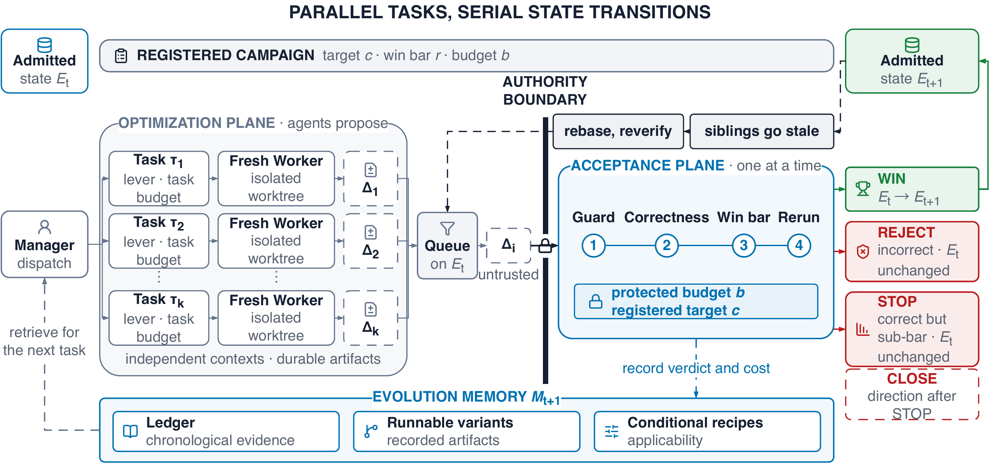

边缘设备，需要自己的答案。
同一个模型换一台设备，瓶颈往往就变了。
在云端，通用推理框架可以把工程成本分摊到大量部署上。到了消费级 GPU、嵌入式设备和统一内存笔记本，显存、算子覆盖、内核启动开销和运行时接口各有约束。把同一套系统搬过去，能运行只是第一步。
EngineTailor 从一个更具体的问题开始：对一个固定的模型、设备和负载，什么样的执行路径才合适？这里的“目标”同时绑定这三个条件。模型名字相同，并不意味着可以共享同一个性能结论。
一个已有的、可运行的引擎是演化的起点。Agent 可以围绕融合、布局、精度或调度改动一段明确的执行路径。每次改动都回到同一个问题：它在这个目标上正确吗，整个引擎真的更快了吗？
Agent 决定尝试什么，
目标侧证据决定保留什么。
本研究比较的是具体目标上的专用实现。它不把设备数量或代码规模当作有效性证据，也不提出通用引擎的统一排名。
一次优化，怎样成为下一个版本？
关键在于区分提出代码和接纳代码的权限。EngineTailor 由 Manager 整理当前目标、性能分析和历史记录，再给 Worker 分派有边界的任务。Worker 在隔离的候选分支中实现改动。它不能修改自己的评判标准，也不能自行宣布候选成为可信状态。
记录目标、基线、预算、停止条件和测量协议，使候选回答同一个问题。
受保护的参考与校准后的目标检查判断正确性。故意损坏的负对照用于检查验证器是否能识别错误。
局部内核变快可以指导下一步，但只有目标级正确性通过、端到端收益达标并经独立复验，才能推进引擎版本。
保存可运行变体、接纳或停止的证据以及机制的适用条件，让后续 Agent 可以重新验证。

正确性检查，也需要校准。
自由生成的 token 序列可能因一次舍入差异改变后续路径。仅看两个自由生成序列是否完全相同，可能误拒绝数值上忠实的融合。论文采用校准后的 teacher-forced 检查及其他目标相关探针；连续动作模型则检查动作误差、形状和有限性。改变精度的路径还需要单独的质量证据。
每一个数字，都属于一个目标。
论文研究了五个模型与设备组合。B200 上的 Qwen3-4B 预注册实验支持自主演化审计；其余有人协助、由 Agent 编写改动的实验用于研究专用化与目标变更。下面选择四个代表性比较，切换设备可以查看各自的负载、基线和结果边界。
Decode latency · 越低越好
同会话的 BF16 比较，正确性检查通过，五个样本。4k / 8k 下相对 SGLang 的解码延迟分别降低 24.4% / 23.1%。这衡量最终专用引擎的性能，不是相同搜索预算下的优化效率。
Decode throughput · 越高越好
5.9% 对比的是 SGLang 的中位数。SGLang 最佳单次为 70.89 tok/s，与 EngineTailor 基本持平。混合精度 decode 和 FP8 prefill 的部分比较仍落后于 SGLang。
Action latency · 越低越好
同设备、同 CUDA Event 测量协议，3 次预热、5 次计时，报告中位数。一个更快的 W8A8 分支未通过冻结的动作误差检查，因此没有替代 BF16 默认实现。
Wall-token latency · 越低越好
这是 native weight-only W8 与 Ollama GGUF Q8_0 的跨格式部署比较。两者量化格式不同，不能解释为同精度内核加速。EngineTailor 的目标检查为 127/128，不能据此声称生成输出逐位一致。
更快的候选，也可能被拒绝。
性能只是接纳条件之一。Orin 上更快却未通过动作误差检查的分支，和跨目标后正确却没有收益的机制，都应留在记录里。它们限定了方法适用的范围，也告诉后续 Agent 哪条路已经被检验过。
能迁移的是机制，不能迁移的是结论。
一次成功可以留下可运行变体和适用条件。新的目标可以借用这些材料形成候选，但源设备上的 WIN 不会自动变成目标设备上的 WIN。
迁移按上下文分桶的 decode attention。目标侧重新验收后，concurrency 16 吞吐由 2803.6 提高到 3191.3 tok/s，增幅 13.83%。通过 126/128 token 决策检查与 1920/1920 图执行忠实性检查。
迁移 prefill 机制组合，包括末 token 的 lm_head 切片、支持 GQA 的 causal SDPA 和 RMSNorm。目标侧检查通过后，4k / 8k prompt 吞吐分别提高 21.8% / 48.5%。
没有复现的收益，同样要留下。在 Llama 上消除 host idle 的重叠机制，到了缺少同类空闲间隙的 Qwen 上，没有复现相同量级的收益。记录的价值包含它的前提，而不仅是一个加速数字。
这些记录支持“经过目标侧复验的迁移已经发生”。它们没有隔离经验记忆对搜索成本的因果影响，也没有证明 Manager 策略优于其他策略。回答这些问题还需要相应的对照与消融。
把一次加速，变成可追溯的演化。
EngineTailor 研究的进展单位，是一次有证据支持的引擎版本更新。生成代码只是其中一步。
- 目标要具体。模型、设备和负载共同定义一次有效比较。
- 接纳要独立。候选实现、正确性标准和最终验收不能共享修改权限。
- 经验要能重跑。保留可运行变体、验证条件和停止记录，让新的目标重新建立结论。
当前证据支持这些目标上的专用化和观察到的迁移。它不支持跨硬件平均加速、通用引擎排名，或经验记忆降低搜索成本的因果结论。能耗和热行为也未在不同设备间归一化。
One engine.
Every change, verified.
关于本文与数据来源
本文依据 EngineTailor 研究稿件撰写，选取了正文 headline results 与实验讨论中的数值。匿名论文原稿不随本文公开。本文解读的是下述稿件中的实验比较，不代替正式论文的最终版本或录用信息。数据按模型、设备、精度与负载分别报告。
主要出处包括 Method、Experimental setup、Table 1、End-to-end impact、Verified retargeting 与 Scope and threats to validity。本文中的简化流程图仅解释方法，不表示执行次数、时间或测量数据。
页面设计参考 Humanfia 的留白与图解组织，以及 Tri Dao 的 FlashAttention-3 博客 与 Distill 的 Feature Visualization 的文章式叙事。页面代码与本文图解为本次独立制作。